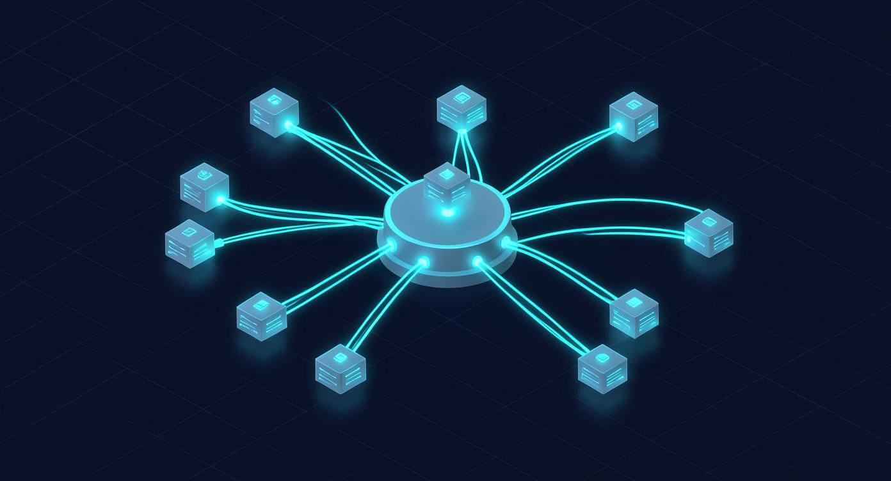
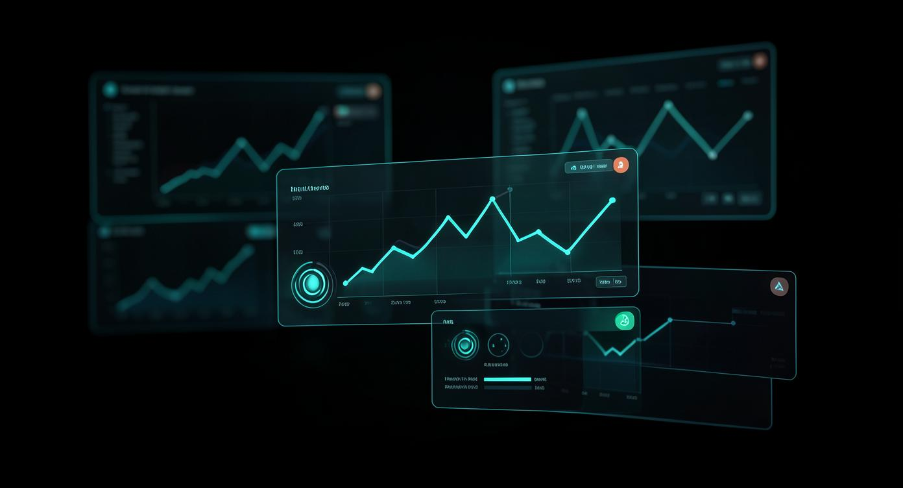

Event-Driven Architecture Kya Hai? Enterprise Me Real-Time Decision Kaise Aate Hain

एक बड़े ऑर्गनाइजेशन में रोज़ ऐसा होता है: पेमेंट आता है, ऑर्डर बनता है, स्टॉक घटता है, इनवॉइस जाता है, नोटिफिकेशन निकलता है, और fraud team को अलर्ट मिलता है। अगर ये सारे काम एक ही प्रोग्राम में लाइन-दर-लाइन चलें, तो हर नया काम जोड़ने पर पूरा सिस्टम धीमा होता जाता है। एक जगह अटकाव आया तो सब रुक जाता है। Event-driven architecture इसी दिक्कत का जवाब है — हर हिस्सा अपना काम खुद करता है और बाकी हिस्सों को सिर्फ यह बताता है कि "कुछ हुआ है"।
इस आर्टिकल में मैं यह समझाने की कोशिश करूँगा कि यह pattern असल में कैसे काम करता है, enterprise में real-time decision कहाँ से आते हैं, कौन से design नियम टूटने पर सबसे बड़ी गड़बड़ होती है, और कब आपको यह रास्ता नहीं चुनना चाहिए। भाषा जितनी आसान रख सकूँ, रखूँगा — क्योंकि इस विषय पर ज़्यादातर लेख सीधे Kafka के topics से शुरू हो जाते हैं और पढ़ने वाले को यह समझ नहीं आता कि असली फायदा क्या है।
छोटा जवाब: Event-driven architecture में सिस्टम के हिस्से एक-दूसरे को सीधे call नहीं करते। वे "घटना" (event) के रूप में संदेश भेजते हैं और बाकी हिस्से उन्हें सुनकर अपना काम करते हैं। इससे हर हिस्सा अलग से scale हो सकता है, एक हिस्सा बंद होने पर बाकी चलते रहते हैं, और नया consumer जोड़ना आसान हो जाता है। कीमत यह है कि आपको ordering, duplicate और failure की सोच पहले से रखनी पड़ती है।
Event क्या होता है — बुनियादी शब्दावली
Event का मतलब है "कुछ हो चुका" की सूचना। ध्यान दें, यह command नहीं है। Command कहता है "यह करो", event कहता है "यह हो गया"। यह फर्क छोटा लगता है पर पूरे design को बदल देता है, क्योंकि event भेजने वाले को यह जानने की ज़रूरत नहीं कि उसे कौन-कौन सुन रहा है।
| हिस्सा | काम | उदाहरण |
|---|---|---|
| Event | घटना का रिकॉर्ड, साथ में थोड़ा data | order.placed, payment.failed |
| Producer | event बनाकर भेजता है | checkout service |
| Broker | event रखता है और आगे बाँटता है | Kafka, RabbitMQ, cloud queue |
| Consumer | event सुनकर अपना काम करता है | invoice service, fraud engine |
| Schema | event के fields का तय ढाँचा | order_id, amount, currency |
| Dead-letter queue | वे events जो बार-बार fail हों | अलग जगह जमा, बाद में देखें |
Broker एक तरह का डाकघर है। Producer चिट्ठी डालता है, broker उसे संभालकर रखता है, और जो भी consumer सुन रहा है उसे देता है। ज़्यादातर brokers में एक खास बात होती है — चिट्ठी पढ़ने के बाद भी वह कुछ समय तक रखी रहती है। इसका मतलब यह है कि नया consumer जोड़ने पर वह पुराने events भी पढ़ सकता है, जो नई service बनाते समय बहुत काम आता है।
Request-response और event-driven में असली फर्क
पुराना तरीका सीधा है: Service A, Service B को call करती है और जवाब का इंतज़ार करती है। इसमें समझना आसान है, debug करना आसान है, और छोटे सिस्टम के लिए यही सही है। पर जैसे ही सेवाओं की संख्या बढ़ती है, यह जंजीर बन जाती है — अगर बीच में कोई एक धीमा हुआ, तो पूरी जंजीर धीमी।
| पहलू | Request-response | Event-driven |
|---|---|---|
| जुड़ाव | सीधा — A को B पता होना चाहिए | ढीला — A को सिर्फ event पता है |
| नया consumer जोड़ना | Producer का code बदलना पड़ता है | अलग service जोड़ दें, producer वही रहता है |
| एक हिस्सा बंद हो तो | पूरा flow रुक सकता है | event जमा रहता है, बाद में process होता है |
| जवाब का समय | सीधा और तय | async — थोड़ी देर बाद |
| Debug करना | आसान | मुश्किल, tracing चाहिए |
| सबसे अच्छा कब | छोटा सिस्टम, तुरंत जवाब चाहिए | कई टीमें, अलग-अलग scale, लंबा flow |
इसीलिए असली सवाल "कौन सा बेहतर है" नहीं होता। असली सवाल यह होता है — कहाँ तुरंत जवाब चाहिए और कहाँ "थोड़ी देर में हो जाए" चलेगा। जहाँ उपयोगकर्ता स्क्रीन पर इंतज़ार कर रहा है, वहाँ request-response ठीक है। जहाँ इनवॉइस बनना, ईमेल जाना, रिपोर्ट अपडेट होना है, वहाँ event बेहतर है।

Real-time decision असल में बनता कैसे है
जब कोई कहता है "हमारा सिस्टम real-time decision लेता है", उसके पीछे आम तौर पर चार परतें होती हैं। यह क्रम समझ लेने पर आप अपने सिस्टम में ठीक जगह सुधार कर सकते हैं।
पहली परत — इकट्ठा करना। अलग-अलग जगहों से events आते हैं: ऐप, वेबसाइट, POS, बैंक, लॉजिस्टिक्स पार्टनर। यहाँ सबसे बड़ी चुनौती volume है, और दूसरी चुनौती यह कि हर स्रोत का data अलग ढाँचे में आता है।
दूसरी परत — पहचानना। हर event पर नियम चलते हैं। जैसे "एक ही कार्ड से 10 मिनट में तीन शहरों से पेमेंट" या "स्टॉक 5 से नीचे" या "डिलीवरी SLA से 20 मिनट बाहर"। यहाँ नियम जितने साफ और छोटे हों, उतना अच्छा।
तीसरी परत — फैसला लेना। पहचान के बाद तय होता है कि क्या करना है — पेमेंट रोकना, मैन्युअल review में भेजना, ऑटो-अप्रूव करना, या सिर्फ लॉग करना। इस परत में अक्सर नियम + model दोनों होते हैं, और हर फैसले का कारण दर्ज होना चाहिए।
चौथी परत — कार्रवाई। फैसले से नए events निकलते हैं: alert भेजो, refund शुरू करो, ticket बनाओ। यहीं event-driven डिज़ाइन सबसे ज़्यादा फायदा देता है, क्योंकि एक फैसले से कई टीमें अपना-अपना काम शुरू कर सकती हैं, बिना एक-दूसरे का इंतज़ार किए।
इस पूरे flow में सबसे ज़्यादा समय अक्सर पहली और दूसरी परत में जाता है, पर सबसे ज़्यादा गड़बड़ चौथी परत में होती है — क्योंकि वहीं असली पैसा और असली ग्राहक जुड़ा होता है।
Broker चुनने के विकल्प
हर broker एक जैसा नहीं होता। आपकी ज़रूरत के हिसाब से चुनाव बदलता है — कितने messages, कितनी देर रखने हैं, कितने consumers, और क्या ordering चाहिए।
| विकल्प | किसके लिए अच्छा | ध्यान रखें |
|---|---|---|
| Kafka | बहुत बड़ा volume, event log, replay | Operations और monitoring पर खर्चा |
| RabbitMQ | Task queue, routing, छोटा-मध्यम सिस्टम | बहुत लंबा retention इसका काम नहीं |
| Cloud queue (SQS आदि) | शुरुआत करना, managed रखरखाव | Ordering और replay की सीमाएँ |
| Managed Kafka | टीम छोटी हो, पर volume बड़ा | Cost और vendor निर्भरता |
| Database outbox | पहले से DB वाला सिस्टम | एक और चीज़ नहीं, बल्कि pattern है |
मेरी सलाह यह है कि छोटी शुरुआत करें। अगर आपके पास रोज़ 50 हज़ार events हैं, तो बड़े cluster की ज़रूरत नहीं। पहले एक managed queue से शुरू करें, pattern सीखें, और जब replay या बहुत consumers की ज़रूरत पड़े तभी भारी tool पर जाएँ।
पाँच design नियम जो टूटने पर सबसे बड़ी गड़बड़ होती है
1. Idempotency। हर consumer ऐसा होना चाहिए कि एक ही event दो बार आ जाए तो नतीजा वही रहे। Network की दुनिया में duplicate सामान्य है, अपवाद नहीं। इसके लिए event में एक unique id रखें और consumer उसे याद रखे।
2. Ordering की सच्चाई। ज़्यादातर brokers ordering की गारंटी सिर्फ एक partition या एक key के अंदर देते हैं। अगर आपको "पहले payment, फिर invoice" चाहिए, तो दोनों events को एक ही key पर भेजें, वरना क्रम बिगड़ सकता है।
3. Schema का अनुशासन। Event का ढाँचा बदलना सबसे आसान तरीका है पूरे सिस्टम को तोड़ने का। नियम रखें — नए field जोड़ सकते हैं, पुराने हटाएँ नहीं। और schema का version रखें।
4. Dead-letter queue। जो event बार-बार fail हो, उसे हमेशा के लिए retry करते रहना सबसे बड़ी गलती है। उसे अलग queue में भेजें, alert बनाएँ, और तय करें कि उसे कौन देखेगा।
5. Backpressure। अगर consumer उतना तेज़ नहीं जितना producer, तो queue बढ़ती जाती है और देर से पता चलता है। इसलिए queue की लंबाई पर alert रखें, और तय करें कि सीमा पार होने पर क्या होगा।
Latency budget: "real-time" का मतलब क्या है
"Real-time" शब्द बहुत लचीले ढंग से इस्तेमाल होता है। पेमेंट fraud में 200 मिलीसेकंड मायने रखते हैं, पर स्टॉक replenishment में 5 मिनट भी ठीक है। इसलिए पहले तय करें कि आपकी संख्या क्या है, फिर उसे हिस्सों में बाँटें।
| चरण | आम लक्ष्य | टिप्पणी |
|---|---|---|
| Event producer से broker तक | 10–50 ms | Network और batching पर निर्भर |
| Broker से consumer तक | 20–100 ms | Consumer busy हो तो बढ़ जाता है |
| नियम या model का फैसला | 10–300 ms | बाहरी API call सबसे धीमा हिस्सा |
| कार्रवाई शुरू होना | 50 ms–2 s | अलग service के call पर निर्भर |
एक आदत जो बहुत काम आती है — हर event में एक timestamp रखें कि वह कब पैदा हुआ, और हर परत पर यह नापें कि कितनी देर लगी। जब कभी कोई कहे "सिस्टम धीमा है", तो आपके पास अनुमान नहीं, संख्या होगी।
तीन जाल जिनमें टीमें अक्सर फँसती हैं
पहला — dual write। Service पहले database में लिखती है और फिर event भेजती है। अगर बीच में कुछ टूटा, तो data बचा रह जाता है और event नहीं जाता। इसका इलाज outbox pattern है: event को उसी transaction में एक table में लिखें, और एक अलग process उसे broker तक पहुँचाए।
दूसरा — event storm। एक event सुनकर service दूसरा event भेजती है, वह तीसरा, और गिनती तेज़ी से बढ़ती जाती है। कुछ ही मिनटों में सिस्टम अपने ही events से भर जाता है। इलाज — हर flow के लिए एक सीमा तय करें और एक ही event के loop पर alert रखें।
तीसरा — ordering की गलत धारणा। "Events तो क्रम से आते हैं" — यह मान लेना सबसे महंगा है। जब consumer parallel चलते हैं, तो क्रम की गारंटी सिर्फ key के अंदर रहती है। जहाँ क्रम ज़रूरी है, वहाँ version number या timestamp से जाँचें और पुराना event आए तो छोड़ दें।
कब event-driven नहीं चुनना चाहिए
अगर आपका सिस्टम छोटा है, टीम में दो-तीन लोग हैं, और सारा flow एक ही database पर चलता है, तो simple request-response से काम चल जाएगा और आपका समय बचेगा। Event-driven की कीमत monitoring, tracing और सोच में चुकानी पड़ती है।
दूसरी स्थिति — जहाँ उपयोगकर्ता को तुरंत जवाब चाहिए और उसे async का कोई फायदा नहीं। जैसे login, search, form submit। इन्हें event में डालने से सिर्फ देरी बढ़ती है।
तीसरी स्थिति — जहाँ टीम के पास अभी tracing और logging की बुनियाद नहीं है। बिना इसके event-driven सिस्टम debug करना बहुत मुश्किल हो जाता है, क्योंकि आपको यह देखना ही नहीं आएगा कि एक order किन-किन सेवाओं से गुज़रा।
एक छोटा उदाहरण: order placed का event
नीचे एक साधारण event का ढाँचा है। इसमें ध्यान दें कि event में सिर्फ वह जानकारी है जो सुनने वालों को चाहिए, और एक unique id तथा timestamp है। पूरा order object भेजना आम गलती है, क्योंकि फिर consumer को आपके internal ढाँचे पर निर्भर होना पड़ता है।
{
"event_id": "evt_9f21c",
"type": "order.placed",
"version": 2,
"occurred_at": "2026-09-24T10:15:32Z",
"order_id": "ord_77231",
"amount": 2499.00,
"currency": "INR",
"channel": "app",
"items_count": 2
}इस event को सुनने वाली हर service अपना काम करती है — inventory घटाती है, invoice बनाती है, loyalty points जोड़ती है, और analytics में भेजती है। चारों में से कोई भी नहीं जानती कि बाकी तीन क्या कर रही हैं। यही इस pattern की असली ताकत है।
अपनी टीम के लिए छोटी चेकलिस्ट
अगर आप आज event-driven शुरू करने की सोच रहे हैं, तो इन सवालों के जवाब पहले लिख लें। कौन से events होंगे और उनके नाम क्या होंगे? हर event का schema कौन रखेगा? Duplicate आने पर consumer क्या करेगा? Fail होने पर event कहाँ जाएगा और उसे कौन देखेगा? किस चीज़ की निगरानी होगी — queue लंबाई, देरी, या error दर?
मेरे अनुभव में जो टीमें यह चार पन्ने पहले लिख लेती हैं, उनका सिस्टम बाद में बहुत कम दर्द देता है। जो सीधे code से शुरू करती हैं, उन्हें छह महीने बाद पता चलता है कि आधे events का मतलब ही तय नहीं है।
मैंने इस pattern से क्या सीखा
पहली सीख यह रही कि event-driven का सबसे बड़ा फायदा performance नहीं, बल्कि टीमों का अलग होना है। जब दो टीमें एक ही flow पर काम करती हैं, तो सीधे call वाला ढाँचा हर हफ्ते टकराव पैदा करता है। Event के ज़रिए वे एक-दूसरे का इंतज़ार किए बिना आगे बढ़ सकती हैं।
दूसरी सीख — सबसे ज़्यादा समय design में नहीं, observability में लगता है। मैंने शुरू में सोचा था कि events बहने लगे तो काम खत्म। असल में तब काम शुरू होता है — जब आपको यह देखना होता है कि एक order कहाँ अटका।
तीसरी सीख — कम events बेहतर। शुरुआत में हमने हर छोटी चीज़ का event बना दिया। कुछ महीनों बाद पता चला कि 70% events किसी काम के नहीं थे और उन्हीं की वजह से monitoring शोर बन गया था। अब हम पहले तय करते हैं कि कौन सा event सच में किसी फैसले या कार्रवाई से जुड़ा है।
अक्सर पूछे जाने वाले सवाल
क्या event-driven architecture microservices के बिना चल सकता है?
हाँ। Event-driven एक संचार का तरीका है, deployment का नहीं। आपके पास तीन अलग services हो सकती हैं या एक ही application के तीन modules — दोनों में events काम करते हैं। कई टीमें पहले एक ही app के अंदर events से शुरुआत करती हैं।
क्या इससे data duplicate होने का खतरा रहता है?
हाँ, और यह सामान्य है। इसका इलाज duplicate न होना नहीं, बल्कि consumer का idempotent होना है। हर event में unique id रखें और consumer उसे याद रखे, ताकि दोबारा आने पर काम दोहराया न जाए।
Kafka ज़रूरी है क्या?
नहीं। Kafka बहुत अच्छा tool है, पर छोटे और मध्यम सिस्टम के लिए managed queue या RabbitMQ काफी है और संभालना आसान है। Tool चुनने से पहले अपनी ज़रूरत लिखें — volume, retention, ordering।
Real-time का दावा कैसे जाँचें?
हर परत पर समय नापें और उसे dashboard पर दिखाएँ। अगर किसी event को पैदा होने से कार्रवाई तक पहुँचने में लगने वाला समय आपके तय लक्ष्य के अंदर है, तभी "real-time" कहें। बिना नापे यह शब्द marketing बन जाता है।
क्या इसे बाद में बदलना मुश्किल है?
Pattern बदलना मुश्किल है, पर events का ढाँचा संभालना आसान है अगर आप शुरू से schema का version रखें और पुराने fields न हटाएँ। इस एक आदत से बाद के बदलाव बहुत सस्ते हो जाते हैं।
अगर आप backend और system design की बुनियादी बातें दोहराना चाहते हैं, तो Basic Computer Fundamentals के नोट्स और Computer Network क्या है वाला आर्टिकल पहले पढ़ लें। Database की तुलना के लिए DBMS और RDBMS का फर्क भी काम आएगा।
Broker, latency और retention की संख्याएँ हर setup में अलग होती हैं — अपने load test से पुष्टि करें, और events का schema शुरू से version करें।